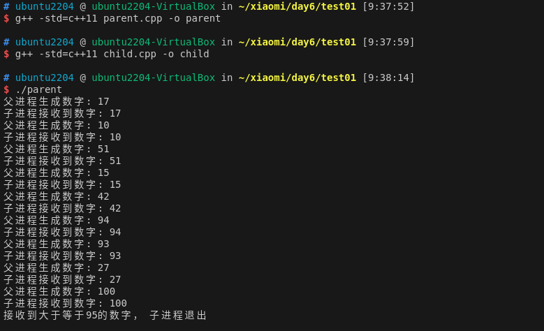
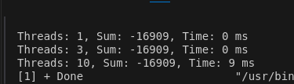
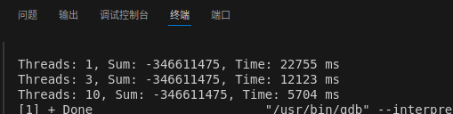
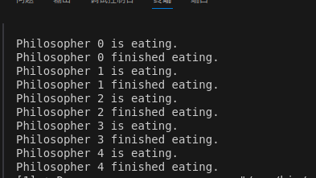
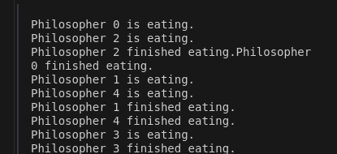
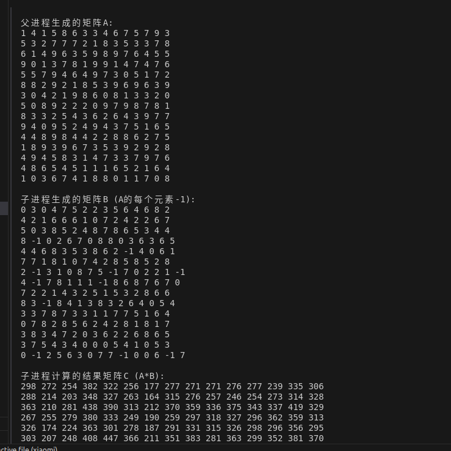

Day3
Day3
1.C++父子进程通信程序
1.知识点：
-
int pipefd[2]：用与建立管道连接，pipefd[0]为读取，pipefd[1]为写入。
-
execlp()函数：将child中的程序取代当前子进程中的所有代码。就不需要在子进程中进行读取等操作了。
-
虽然会套模板写fork(),但是有一点不理解，既然fork开始就返回了一个值。后面两个if语句判断是否为父子节点，但是从运行结果来看好像两个条件语句都执行了。他是怎么满足fork返回值等于0又不等于0的。：
通过查资料问ai得到一个答案：fork函数调用一次返回两个值。
返回两个值并不是一次性返回两个值，而是在父进程和自进程分别调用fork()。
当父进程调用 fork() 时，操作系统会创建一个新的子进程。
系统并不"进入"子进程，而是同时运行父进程和子进程。 子进程从 fork() 返回的位置开始执行，就好像它自己调用了 fork() 一样。
2.程序：
1.主程序：
int main() {
int pipefd[2];//pipefd[0]读取,pipefd[1] write
if (pipe(pipefd) == -1) {
std::cerr << "Failed to create pipe" << std::endl;
return 1;
}
pid_t pid = fork();
if (pid == -1) {
std::cerr << "Failed to fork" << std::endl;
return 1;
} else if (pid == 0) {
// // 子进程
execlp("./child", "child", nullptr);
std::cerr << "Failed to execute child process" << std::endl;
return 1;
} else {
// 父进程
close(pipefd[0]); // 关闭读端
std::random_device rd;
std::mt19937 gen(rd());
std::uniform_int_distribution<> dis(0, 100);
while (true) {
int num = dis(gen);
write(pipefd[1], &num, sizeof(int));
std::cout << "父进程生成数字: " << num << std::endl;
std::this_thread::sleep_for(std::chrono::seconds(1));
}
close(pipefd[1]);
wait(nullptr);
}
return 0;
2.重映射的子线程：
int main() {
int num;
while (read(STDIN_FILENO, &num, sizeof(int)) > 0) {
std::cout << "子进程接收到数字: " << num << std::endl;
if (num >= 95) {
std::cout << "接收到大于等于95的数字，子进程退出" << std::endl;
return 0;
}
}
return 0;
}
3.结果：

2.C++多线程求和程序
1. 知识点
std::vector<std::thread> threads: 用于存储多个线程对象。std::mutex: 互斥锁，用于在多线程环境中保护共享资源。- 使用多线程时候数组使用std::ref：传递的是应用，确保操作的是同一个对象，而不是复制体
std::lock_guard<std::mutex>: RAII风格的互斥锁包装器，自动管理锁的获取和释放。- 线程的创建和join: 通过
std::thread创建线程，通过join()等待线程完成。 - for (int i = 0; i < num_threads; ++i) {
//设置起始位置，中止位置 threads.emplace_back(sum_portion, std::ref(numbers), start, end, std::ref(result));
} 疑问：都已经for循环将结果存入result中了，为什么还要join等待线程结束。
搜索过后：这是我对多线程的一个误区，以为for循环i一遍里面的内容都执行完了。实际上循环一次代码开始执行了，但是计算线程还在计算并没有运行结束。
2. 程序
1.生成随机数组：
void generate_numbers(std::vector<int>& numbers, int count, int min_val, int max_val) {
std::random_device rd;
std::mt19937 gen(rd());
std::uniform_int_distribution<> dis(min_val, max_val);
for (int i = 0; i < count; ++i) {
numbers.push_back(dis(gen));
}
}
- 定义求和函数：
void sum_portion(const std::vector<int>& numbers, size_t start, size_t end, long long& result) {
long long local_sum = 0;
for (size_t i = start; i < end; ++i) {
local_sum += numbers[i];
}
std::lock_guard<std::mutex> lock(result_mutex);
result += local_sum;
}
long long threaded_sum(const std::vector<int>& numbers, int num_threads) {
std::vector<std::thread> threads;
long long result = 0;
size_t chunk_size = numbers.size() / num_threads;
for (int i = 0; i < num_threads; ++i) {
size_t start = i * chunk_size;
size_t end = (i == num_threads - 1) ? numbers.size() : (i + 1) * chunk_size;
threads.emplace_back(sum_portion, std::ref(numbers), start, end, std::ref(result));
}
for (auto& thread : threads) {
thread.join();
}
return result;
}
3.多线程计算数组大小（分块）：
long long threaded_sum(const std::vector<int>& numbers, int num_threads) {
std::vector<std::thread> threads;
long long result = 0;
size_t chunk_size = numbers.size() / num_threads;
for (int i = 0; i < num_threads; ++i) {
size_t start = i * chunk_size;
size_t end = (i == num_threads - 1) ? numbers.size() : (i + 1) * chunk_size;
threads.emplace_back(sum_portion, std::ref(numbers), start, end, std::ref(result));
}
for (auto& thread : threads) {
thread.join();
}
return result;
}
3. 结果：

增大数组大小：

就能发现数据量小的时候单线程比多线程要快，随着数据量增加，多线程的好处显著的出现了。
死锁问题程序：
1.按顺序轮流进餐
1.1实现思路：
- 顺序控制：
- 使用一个共享的
current_philosopher变量来跟踪当前应该进餐的哲学家。 -
利用
std::mutex和std::condition_variable来实现精确的顺序控制。 -
同步机制：
- 每个哲学家在尝试进餐前，先检查是否轮到自己（
current_philosopher == id）。 -
如果不是自己的回合，则等待条件变量的通知。
-
进餐过程：
- 当轮到某个哲学家时，他会拿起左右两边的叉子（通过锁定对应的互斥锁）。
- 进餐完成后，更新
current_philosopher为下一个哲学家的ID，并通知所有等待的线程。
1.2结果：

2.最短时间内完成所有哲学家的进餐
2.1方案：
- 并发进餐：
- 所有哲学家同时开始尝试进餐，不强制特定顺序。
-
使用
std::thread为每个哲学家创建一个独立的执行线程。 -
资源获取：
- 使用
std::scoped_lock同时锁定左右两把叉子，避免死锁。 -
std::scoped_lock是C++17引入的RAII模板，可以同时锁定多个互斥量，并在析构时自动解锁。 -
无序执行：
- 哲学家们互相竞争资源，谁先获得两把叉子谁就先进餐。
-
这种方法利用了操作系统的调度机制，自然地分配资源。
-
防止饥饿：
-
虽然不保证特定顺序，但
std::mutex的实现通常遵循先来先服务的原则，降低了特定哲学家长期饥饿的风险。 -
效率考虑：
- 进餐时间使用
std::this_thread::sleep_for模拟，可以根据实际需求调整。 -
没有额外的同步开销，每个哲学家只在必要时（获取叉子时）进行等待。
-
资源管理：
- 使用
std::vector<std::mutex>管理叉子，确保资源的动态分配和自动释放。 - 每个叉子作为一个独立的互斥量，允许最大程度的并发。
2.2结果

课后作业：多进程生成，多线程计算：
1.算法设计：
1.1生成矩阵：类似第一个课堂作业，不过第一次是用管道传输的数据，这里我选择使用共享内存将矩阵传给子进程，每个减1。
1.2矩阵相乘：利用了第二个课堂作业的思想，我先计算start行到end行的矩阵，后在ultiplyParallel调用多个线程分别调用这个函数来计算矩阵相乘的结果。
使用hardware_concurrency()调用所有可用的进程来进行计算，但是数据量大才能增加计算速度。
2.代码：
1.生成矩阵：
Matrix generateMatrixA(int n) {
Matrix A(n, vector<int>(n));
for (int i = 0; i < n; i++) {
for (int j = 0; j < n; j++) {
A[i][j] = rand() % 10; // 生成0-9的随机数
}
}
return A;
}
//主函数中调用父子进程生产A，B两个矩阵
// 父进程生成矩阵A
Matrix A = generateMatrixA(n);
cout << "父进程生成的矩阵A:" << endl;
printMatrix(A);
// 创建共享内存
const char* shmName = "/matrix_shm";
int shmFd = shm_open(shmName, O_CREAT | O_RDWR, 0666);
if (shmFd == -1) {
perror("shm_open failed");
exit(1);
}
// 设置共享内存大小
if (ftruncate(shmFd, n * n * sizeof(int)) == -1) {
perror("ftruncate failed");
exit(1);
}
// 映射共享内存
int* sharedData = (int*)mmap(nullptr, n * n * sizeof(int), PROT_READ | PROT_WRITE, MAP_SHARED, shmFd, 0);
if (sharedData == MAP_FAILED) {
perror("mmap failed");
exit(1);
}
// 将矩阵A的数据复制到共享内存
for (int i = 0; i < n; i++) {
for (int j = 0; j < n; j++) {
sharedData[i * n + j] = A[i][j];
}
}
// 创建子进程
pid_t pid = fork();
if (pid == -1) {
perror("fork failed");
exit(1);
} else if (pid == 0) {
// 子进程
Matrix B(n, vector<int>(n));
// 从共享内存读取数据并生成矩阵B
for (int i = 0; i < n; i++) {
for (int j = 0; j < n; j++) {
B[i][j] = sharedData[i * n + j] - 1;
}
}
cout << "\n子进程生成的矩阵B (A的每个元素-1):" << endl;
printMatrix(B);
2.计算矩阵： * 计算部分矩阵：
void multiplyPartial(const Matrix& A, const Matrix& B, Matrix& C, int start, int end) {
int n = A.size();
for (int i = start; i < end; i++) {
for (int j = 0; j < n; j++) {
int sum = 0;
for (int k = 0; k < n; k++) {
sum += A[i][k] * B[k][j];
}
lock_guard<mutex> lock(mtx);
C[i][j] = sum;
}
}
}
- 多线程计算：
Matrix multiplyParallel(const Matrix& A, const Matrix& B) {
int n = A.size();
Matrix C(n, vector<int>(n, 0));
unsigned int numThreads = thread::hardware_concurrency();
if (numThreads == 0) numThreads = 4;
vector<thread> threads;
int rowsPerThread = n / numThreads;
int remainingRows = n % numThreads;
int start = 0;
for (unsigned int i = 0; i < numThreads; i++) {
int end = start + rowsPerThread + (i < remainingRows ? 1 : 0);
threads.emplace_back(multiplyPartial, ref(A), ref(B), ref(C), start, end);
start = end;
}
for (auto& t : threads) {
t.join();
}
return C;
}
3.运行结果：
